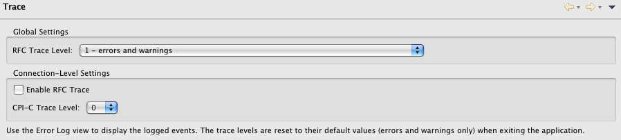

The connector provides a preference page to adjust the trace options of the SAP Java Connector.
For more information about the contents of the trace see the documentation of the Java Connector. The traced events will be logged to the Eclipse logging subsystem and can be displayed using the Error Log view. Changes in the trace options take effect immediately. The trace settings are not saved and will be reset to the default values when restarting the application.